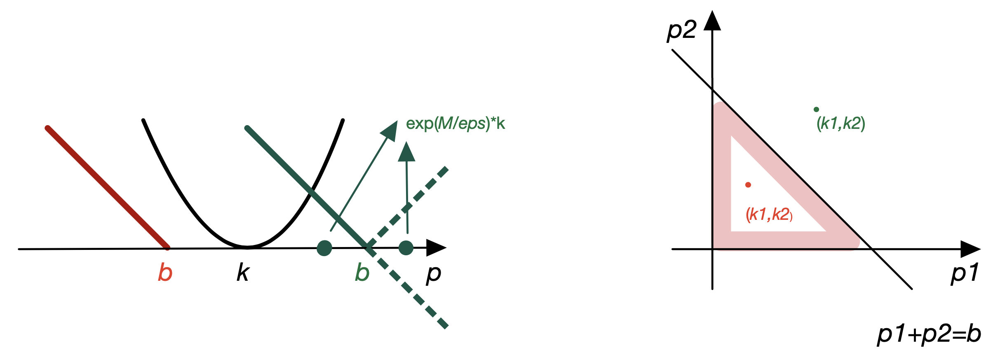

While unbalanced OT and partial OT address issues with unbalanced marginals, other significant limitations remain in the standard OT framework, particularly with natural constraints on transport plans that arise in practical applications. For example, in scenarios where ground transportation is disrupted by natural disasters, certain locations demanding resources cannot be accessed from specific supply points. This necessitates incorporating constraints directly into the optimal transport plan, effectively setting some transport plan entries to zero. This scenario complicates the optimal transport problem as it turns the total possible transported mass into an uncertain variable due to these blockages.
In the work of Cang et al. [6], the concept of supervised optimal transport (sOT) is introduced. This variant supervises the transport plan by imposing specific elementwise constraints, thereby optimizing both the total transported mass and the transport plan simultaneously. Unlike the partial OT problems that handle constraints through pre-defined inequalities [3], the constraints in sOT are dynamically determined during the optimization process, based on the presence of ’infinity’ entries in the cost matrix. This method links closely with the unbalanced OT framework [12], showcasing how sOT can be reformulated to integrate with these existing models, offering a novel approach to handling complex transport scenarios with inherent spatial constraints.
In the framework of sOT, the marginal measures \((\mathbf {a},\mathbf {b})\in \mathbb {R}_+^n\times \mathbb {R}_+^m\) do not necessarily have the same sum, and we are interested in the cost matrix \(\mathbf {C} = (C_{ij})\) that contains \(\infty \) entries. The \(\infty \)-pattern of \(\mathbf {C}\) is defined as the set \begin {align} \label {eqn:infinifty_pattern} \mathcal {P}_{\infty }(\mathbf {C}) = \{ (i,j): C_{ij} = \infty , \ i = 1,2,\cdots ,n, \ j = 1,2,\cdots ,m \}, \end {align}
of positions of \(\mathbf {C}\) containing an infinity element. Similarly one can define 0-pattern of a transport plan \(\mathbf {P}\). By virtue of the optimal transport, the 0-pattern of the optimal plan \(\mathbf {P}^*\) must contain the \(\infty \)-pattern of \(\mathbf {C}\), namely, \(\mathcal {P}_0(\mathbf {P}^*)\supseteq \mathcal {P}_{\infty }(\mathbf {C})\). We further define a feasible set \(\mathcal {A}_{\mathbf {C}}\) for the marginal blocked distribution \((\boldsymbol \upmu ,\boldsymbol \upnu )\) as follows: \begin {align} \mathcal {A}_{\mathbf {C}} = \Big \{ (\boldsymbol \upmu ,\boldsymbol \upnu )\in [0,\mathbf {a}]\times [0,\mathbf {b}] \ \Big |\ \exists \mathbf {P} \in \mathbf {U}(\mathbf {a}-\boldsymbol \upmu , \mathbf {b}-\boldsymbol \upnu ) \text {\ such\ that\ } \langle \mathbf {P}, \mathbf {C} \rangle < \infty \Big \}, \end {align}
in which the inclusion \((\boldsymbol \upmu ,\boldsymbol \upnu )\in [0,\mathbf {a}]\times [0,\mathbf {b}]\) is entrywise, namely, \(\mu _i\in [0,a_i], i=1,2,\cdots n\) and \(\nu _j\in [0,b_j], j=1,2,\cdots m\).
We define sOT as the following minimization problem \begin {align} \label {eqn:UUOT_formI} L_{\text {sOT}}(\mathbf {a},\mathbf {b};\mathbf {C}) := \min _{(\boldsymbol \upmu ,\boldsymbol \upnu )\in \mathcal {B}} \min _{\mathbf {P}\in \mathbf {U}(\mathbf {a}-\boldsymbol \upmu , \mathbf {b}-\boldsymbol \upnu )} \langle \mathbf {P}, \mathbf {C} \rangle \end {align}
where \(\mathcal {B}:= \text {argmin}_{(\boldsymbol \upmu ,\boldsymbol \upnu )\in \mathcal {A}_{\mathbf {C}}}\ \|\boldsymbol \upmu \|_1 + \|\boldsymbol \upnu \|_1\). In other words, we aim to find the optimal transport plan \(\mathbf {P}\) which transports the most marginal density (blocks the least \((\boldsymbol \upmu ,\boldsymbol \upnu )\)) with minimal cost.
The sOT in the forms (??) is a double optimization problem which is computationally challenging. Here, we recast it to the form of a single optimization: \begin {align} \label {eqn:UUOT_formII} L_{\text {sOT}}(\mathbf {a},\mathbf {b};\mathbf {C}) = \min _{\substack {(\boldsymbol \upmu ,\boldsymbol \upnu )\in \mathcal {A}_{\mathbf {C}}\\ \mathbf {P}\in \mathbf {U}(\mathbf {a}-\boldsymbol \upmu ,\mathbf {b}-\boldsymbol \upnu )}} \langle \mathbf {P}, \mathbf {C} \rangle + \gamma (\|\boldsymbol \upmu \|_1 + \|\boldsymbol \upnu \|_1) \end {align}
for sufficiently large \(\gamma \) depending on \(\mathbf {C}\). The equivalence between (??) and (??) is summarized in lemma 4.3.1.
Lemma 4.3.1. Given a cost matrix \(\mathbf {C}\) with \(\infty \)-pattern \(\mathcal {P}_{\infty }(\mathbf {C})\), The two sOT formulations (??) and (??) are equivalent for sufficiently large \(\gamma \).
Note that \(\mathcal {A}_{\mathbf {C}}\) is always non-empty, we can therefore rewrite the formulation (??) in a simpler form: \begin {align} \label {eqn:UUOT_formIII} L_{\text {sOT}}(\mathbf {a},\mathbf {b};\mathbf {C}) = \min _{\mathbf {P}\in \mathbf {U}(\le \mathbf {a},\le \mathbf {b})} \langle \mathbf {P}, \mathbf {C} \rangle + \gamma (\|\mathbf {a}-\mathbf {P}\mathbb {1}\|_1 + \|\mathbf {b}-\mathbf {P}^{\mathrm {T}}\mathbb {1}\|_1). \end {align}
We now consider the entropic regularization of sOT (??): \begin {align} \label {eqn:EntropicUUOT_formI} \min _{\substack {(\boldsymbol \upmu ,\boldsymbol \upnu )\in \mathcal {A}_{\textbf {C}}\\ \textbf {P}\in \mathbf {U}(\textbf {a}-\boldsymbol \upmu ,\textbf {b}-\boldsymbol \upnu )}} \langle \textbf {P}, \textbf {C} \rangle - \epsilon H(\textbf {P}) + \gamma (\|\boldsymbol \upmu \|_1 + \|\boldsymbol \upnu \|_1) \end {align}
or equivalently \begin {align} \label {eqn:EntropicUUOT_formII} \min _{\textbf {P} \in \mathbf {U}(\le \textbf {a}, \le \textbf {b})} \langle \textbf {P}, \textbf {C} \rangle - \epsilon H(\textbf {P}) + \gamma (\|\textbf {a} - \textbf {P}\mathbb {1} \|_1 + \|\textbf {b} - \textbf {P}^{\mathrm {T}}\mathbb {1} \|_1) . \end {align}
It is well known that the unique solution \(\textbf {P}_{\epsilon }^*\) of (??) converges to the optimal solution with maximal entropy within the set of all optimal solutions of the problem (??).
Taking \(\textbf {K} = \exp (-\textbf {C}/\epsilon )\) as the Gibbs kernel, sOT problem (??) can be rewritten in terms of the KL divergence as: \begin {align} \label {eqn:KLUUOT_formI} \min _{\textbf {P} \in \mathbf {U}(\le \textbf {a}, \le \textbf {b})} \epsilon \text {KL}(\textbf {P}|\textbf {K}) + \gamma (\|\textbf {a} - \textbf {P}\mathbb {1} \|_1 + \|\textbf {b} - \textbf {P}^{\mathrm {T}}\mathbb {1} \|_1), \end {align}
or equivalently \begin {align} \label {eqn:KLUUOT_formII} \min _{\textbf {P} \in \mathbb {R}_{+}^{n\times m}} \epsilon \text {KL}(\textbf {P}|\textbf {K}) + \gamma \|\textbf {a} - \textbf {P}\mathbb {1} \|_1 + \iota _{[0,\textbf {a}]}(\textbf {P}\mathbb {1}) + \gamma \|\textbf {b} - \textbf {P}^{\mathrm {T}}\mathbb {1} \|_1 + \iota _{[0,\textbf {b}]}(\textbf {P}^{\mathrm {T}}\mathbb {1}). \end {align}
Note that the entropic sOT (??) matches with the unbalanced OT (??) with the choices: \begin {align} \label {eqn:psi1_psi2} \phi _1(\mathbf {P}) &= \psi _1(\mathbf {P}\mathbb {1}) = \gamma \|\textbf {a} - \textbf {P}\mathbb {1} \|_1 + \iota _{[0,\textbf {a}]}(\textbf {P}\mathbb {1}), \\ \phi _2(\mathbf {P}) &= \psi _2(\mathbf {P}^{\mathrm {T}}\mathbb {1}) = \gamma \|\textbf {b} - \textbf {P}^{\mathrm {T}}\mathbb {1} \|_1 + \iota _{[0,\textbf {b}]}(\textbf {P}^{\mathrm {T}}\mathbb {1}). \end {align}
Therefore we only need to compute the proximal operators \(\mathrm {prox}_{\psi _i}^{\epsilon \mathrm {KL}}(\cdot )\) and insert them into the general Sinkhorn (??).
To derive the genral Sinkhorn for sOT, we need to consider several minimization problems listed in the following lemmas.

Lemma 4.3.2. The following scalar minimization problem has the solution: \begin {align} \underset {p\le b}{\mathrm {argmin}}\ \epsilon \mathrm {KL}(p|k) + M \| p-b \|_1 = \min \{ ke^{\frac {M}{\epsilon }}, b \}. \end {align}
Proof. If \(b\le k\), the minimum is attained at \(p^*=b\) because both \(\mathrm {KL}(p|k)\) and \(\|p-b\|_1\) are decreasing functions over the domain \(p\le b\). If \(k<b\), then taking the first order optimality condition gives \[ \epsilon \log \frac {p}{k} - M = 0 \Rightarrow p = e^{\frac {M}{\epsilon }}k. \] If \(e^{\frac {M}{\epsilon }}k \le b\), then the minimum is attained at \(p^* = e^{\frac {M}{\epsilon }}k\).; on the other hand, if \(e^{\frac {M}{\epsilon }}k > b\), it indicates that the objective function keeps decreasing over the domain \(p<b\) (and even beyond, until \(e^{\frac {M}{\epsilon }}k\) for \(\epsilon \mathrm {KL}(p|k) + M (p-b)\), therefore minimum is reached at \(p^* = b\). A summary of the discussion leads to the conclusion. See a schematic of the proof in Figure 4.1. □
Corollary 4.3.3. The following scalar minimization problem has the solution: \begin {align} \underset {p\ge 0}{\mathrm {argmin}}\ \epsilon \mathrm {KL}(p|k) + M \| p - b \|_1 = \min \left \{ ke^{\frac {M}{\epsilon }}, \max \left \{ke^{-\frac {M}{\epsilon }}, b \right \} \right \}. \end {align}
The lemma above can be extended into vector case as follows,
Lemma 4.3.4. Let \(\mathbf {p}, \mathbf {k}\in \mathbb {R}_+^n\), then \begin {align} \underset {\mathbf {P}^{\mathrm {T}}\mathbb {1}\le \mathbf {b}}{\mathrm {argmin}}\ \epsilon \mathrm {KL}(\mathbf {p}|\mathbf {k}) + M \| \mathbf {p}^{\mathrm {T}}\mathbb {1}-\mathbf {b} \|_1 = \min \left \{ e^{\frac {M}{\epsilon }}, \frac {b}{\mathbf {k}^{\mathrm {T}}\mathbb {1}} \right \} \mathbf {k}. \end {align}
Proof. The proof is similar as that of the previous one. If \(\mathbf {k}\) is beyond the domain \(\mathbf {p}^{\mathrm {T}}\mathbb {1}\le \mathbf {b}\), both \(\epsilon \mathrm {KL}(\mathbf {p}|\mathbf {k})\) and \(M \| \mathbf {p}^{\mathrm {T}}\mathbb {1}-\mathbf {b} \|_1 \) are convex, and the minimal point \(\mathbf {p} = e^{\frac {M}{\epsilon }}\mathbf {k}\) is also beyond the domain \(\mathbf {p}^{\mathrm {T}}\mathbb {1}\le b\), then the minimum is attained on the domain boundary \(\mathbf {p}^{\mathrm {T}}\mathbb {1} = \mathbf {b}\). Minimizing \(\epsilon \mathrm {KL}(\mathbf {p}|\mathbf {k})\) over \(\mathbf {p}^{\mathrm {T}}\mathbb {1} = \mathbf {b}\) yields \(\mathbf {p}^* = \frac {\mathbf {k}}{\mathbf {k}^{\mathrm {T}}\mathbb {1}}\mathbf {b}\).
On the other hand, if \(\mathbf {k}\) is in the domain \(\mathbf {p}^{\mathrm {T}}\mathbb {1} \le \mathbf {b}\), namely, \(\mathbf {k}^{\mathrm {T}}\mathbb {1}\le \mathbf {b}\), then we get the minimal point \(\mathbf {p}^* = e^{\frac {M}{\epsilon }}\mathbf {k}\) of \(\epsilon \mathrm {KL}(\mathbf {p}|\mathbf {k}) + M ( \mathbf {p}^{\mathrm {T}}\mathbb {1}-\mathbf {b} )\). If it is also in the domain \(\mathbf {p}^{\mathrm {T}}\mathbb {1}\le \mathbf {b}\), then it is the expected minimizer \(\mathbf {p}^* = e^{\frac {M}{\epsilon }}\mathbf {k}\); on the other hand, if \(\mathbf {p}^{*,\mathrm {T}}\mathbb {1} = e^{\frac {M}{\epsilon }}\mathbf {k}^{\mathrm {T}}\mathbb {1} > \mathbf {b}\), the minimum of the original problem is reached on the domain boundary, leading to \(\mathbf {p}^* = \frac {\mathbf {k}}{\mathbf {k}^{\mathrm {T}}\mathbb {1}}\mathbf {b}\). Proof is completed. □
We can further extend the conclusion to matrix case.
Lemma 4.3.5. Let \(\mathbf {P}, \mathbf {K}\in \mathbb {R}_+^{n\times n}, \mathbf {a}, \mathbf {b}\in \mathbb {R}_+^n\), the following minimization problems have the solutions: \begin {align} & \underset {\mathbf {P}\mathbb {1} \leq \mathbf {a}}{\mathrm {argmin}}\ \epsilon \mathrm {KL}(\mathbf {P}|\mathbf {K}) + M \| \mathbf {P}\mathbb {1} -\mathbf {a} \|_1 = \emph {diag}\left (\min \left \{ \frac {\mathbf {a}}{\mathbf {K}\mathbb {1}}, e^{\frac {M}{\epsilon }}\mathbb {1} \right \} \right ) \mathbf {K}, \\ &\underset {\mathbf {P}^{\mathrm {T}}\mathbb {1}\le \mathbf {b}}{\mathrm {argmin}}\ \epsilon \mathrm {KL}(\mathbf {P}|\mathbf {K}) + M \| \mathbf {P}^{\mathrm {T}}\mathbb {1} -\mathbf {b} \|_1 = \mathbf {K} \emph {diag}\left (\min \left \{ \frac {\mathbf {b}}{\mathbf {K}^{\mathrm {T}}\mathbb {1}}, e^{\frac {M}{\epsilon }}\mathbb {1} \right \} \right ). \end {align}
Now using the idea of Lemma 4.3.4, we can compute the proximal operators \(\mathrm {prox}_{\psi _i}^{\epsilon \mathrm {KL}}(\cdot )\) which is summarized in the following lemma.
Lemma 4.3.6. Let \(\psi _i(\cdot ) = \gamma \|\mathbf {a}_i-\cdot \|_1 + \iota _{[0,\mathbf {a}_i]}(\cdot ), i = 1, 2\) with \(\mathbf {a}_1=\mathbf {a}\) and \(\mathbf {a}_2 = \mathbf {b}\), then the proximal operator of \(\psi _i\) with respect the \(\mathrm {KL}\) divergence is given as \begin {align} \mathrm {prox}_{\psi _i}^{\epsilon \mathrm {KL}} (\mathbf {q}) = \min \{e^{\gamma /\epsilon }\mathbf {q}, \mathbf {a}_i\}, \ i = 1, 2. \end {align}
Proof. By definition of the proximal operator with respect to the KL divergence, we have \begin {align*} \mathrm {prox}_{\gamma \|\textbf {a}_i-\cdot \| + \iota _{[0,\textbf {a}_i]}(\cdot )}^{\epsilon \mathrm {KL}}(\mathbf {q}) &= \underset {\mathbf {p}\in [0,\mathbf {a}_i]}{\mathrm {argmin}}\ \epsilon \mathrm {KL}(\mathbf {p}|\mathbf {q}) + \gamma \|\textbf {a}_i-\textbf {p}\| \end {align*}
If \(\mathbf {a}_i\le \mathbf {q}\), both \(\mathrm {KL}(\cdot |\mathbf {q})\) and \(\|\mathbf {a}_i-\cdot \|\) decrease over domain \([0,\mathbf {a}_i]\), so the minimum is attained at \(\mathbf {p} = \mathbf {a}_i\); if \(\mathbf {a}_i \ge \mathbf {q}\), taking the derivative of \(\epsilon \mathrm {KL}(\mathbf {p}|\mathbf {q}) + \gamma \|\mathbf {a}_i-\mathbf {p}\|\) with respect to \(\mathbf {p}\) and set it to zero, we find \(\mathbf {p} = \min \{e^{\gamma /\epsilon }\mathbf {q}, \mathbf {a}_i\}\). Combining both two cases yields the result. □
Inserting Lemma 4.3.6 to the general Dykstra algorithm for KL divergence (??), we obtain the generalized Sinkhorn iteration for entropic sOT: Given \(\textbf {u}^0 = \textbf {v}^0 = \mathbb {1}\), for any \(k=0,1,2,\cdots \), execute the following steps: \begin {align} \textbf {u}^{(\ell +1)} &= \frac {\min \{ e^{\gamma /\epsilon }\textbf {K}\textbf {v}^{(\ell )}, \textbf {a}\}}{\textbf {K} \textbf {v}^{(\ell )}} = \min \left \{ e^{\frac {\gamma }{\epsilon }}\mathbb {1}, \frac {\textbf {a}}{\textbf {K}\textbf {v}^{(\ell )}} \right \}; \\ \textbf {v}^{(\ell +1)} &= \frac {\min \{ e^{\gamma /\epsilon }\textbf {K}^{\mathrm {T}}\textbf {u}^{(\ell +1)}, \textbf {b}\}}{\textbf {K}^{\mathrm {T}} \textbf {u}^{(\ell +1)}} = \min \left \{ e^{\frac {\gamma }{\epsilon }}\mathbb {1}, \frac {\textbf {b}}{\textbf {K}^{\mathrm {T}}\textbf {u}^{(\ell +1)}} \right \}. \end {align}